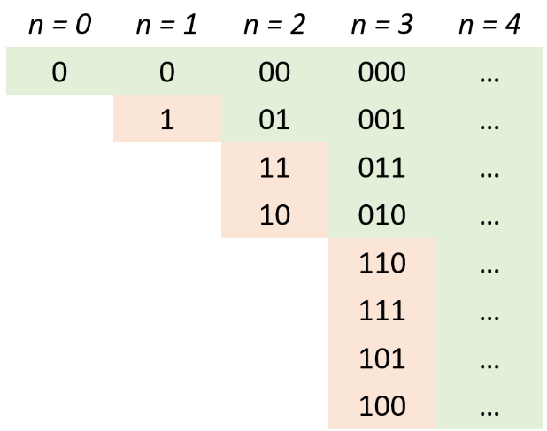

<!DOCTYPE html>
<html lang="zh-Hans-CN"><head><meta charset="utf-8"/><meta http-equiv="X-UA-Compatible" content="IE=Edge"/><link rel="stylesheet" type="text/css" href="../../../../css/modern-norm.min.css"/><link rel="stylesheet" type="text/css" href="../../../../css/prism.min.css"/><link rel="stylesheet" type="text/css" href="../../../../css/katex.min.css"/><link rel="stylesheet" type="text/css" href="../../../../css/wolai.css"/><title>位运算 - wolai 笔记</title><link rel="shortcut icon" href="data:image/svg+xml,%3Csvg xmlns=&apos;http://www.w3.org/2000/svg&apos; viewBox=&apos;0 0 800 800&apos;%3E%3Cdefs%3E%3Cstyle%3E.cls-1%7Bfill:%23fff;%7D%3C/style%3E%3C/defs%3E%3Cg%3E%3Cpath class=&apos;cls-1&apos; d=&apos;M610.08,0c66,0,90,6.88,114.13,19.79a134.62,134.62,0,0,1,56,56l2.28,4.4C793.93,103,800,127.88,800,189.92V610.08l-.08,11.56c-.78,57.38-7.58,79.89-19.71,102.57a134.62,134.62,0,0,1-56,56l-4.4,2.28C697,793.93,672.12,800,610.08,800H189.92l-11.56-.08c-57.38-.78-79.89-7.58-102.57-19.71a134.62,134.62,0,0,1-56-56l-2.28-4.4C6.44,697.75.4,673.72,0,616L0,189.92c0-66,6.88-90,19.79-114.13a134.62,134.62,0,0,1,56-56l4.4-2.28C102.25,6.44,126.28.4,184,0Z&apos;/%3E%3Cpath d=&apos;M610.08,0c66,0,90,6.88,114.13,19.79a134.62,134.62,0,0,1,56,56l2.28,4.4C793.93,103,800,127.88,800,189.92V610.08l-.08,11.56c-.78,57.38-7.58,79.89-19.71,102.57a134.62,134.62,0,0,1-56,56l-4.4,2.28C697,793.93,672.12,800,610.08,800H189.92l-11.56-.08c-57.38-.78-79.89-7.58-102.57-19.71a134.62,134.62,0,0,1-56-56l-2.28-4.4C6.44,697.75.4,673.72,0,616L0,189.92c0-66,6.88-90,19.79-114.13a134.62,134.62,0,0,1,56-56l4.4-2.28C102.25,6.44,126.28.4,184,0Zm4.72,88.9H185.2L172.42,89c-32.78.62-43.68,3.24-54.71,9.14a45.84,45.84,0,0,0-19.54,19.54c-6.61,12.36-9.11,24.55-9.27,67.49V614.8L89,627.58c.62,32.78,3.24,43.68,9.14,54.71a45.84,45.84,0,0,0,19.54,19.54c12.36,6.61,24.55,9.11,67.49,9.27H610.08c46.79,0,59.41-2.44,72.21-9.28a45.84,45.84,0,0,0,19.54-19.54c6.61-12.36,9.11-24.55,9.27-67.49V189.92c0-46.79-2.44-59.41-9.28-72.21a45.84,45.84,0,0,0-19.54-19.54C669.93,91.56,657.74,89.06,614.8,88.9ZM233.33,493.33A73.34,73.34,0,1,1,160,566.67,73.35,73.35,0,0,1,233.33,493.33Z&apos;/%3E%3C/g%3E%3C/svg%3E"></link></head><body><header><div class="image"></div><div class="title"><div class="banner"><div data-symbol="💍" class="icon"></div></div><div data-title="位运算" class="main-title"></div></div></header><article><div class="wolai-block wolai-text"><div><span class="inline-wrap"><a href="https://leetcode-cn.com/circle/article/V8L7Ji/"><span>课代表的笔记</span></a></span></div></div><details class="wolai-block"><summary><div class="marker"></div><span class="inline-wrap"><b>基础知识</b></span></summary><code-block class="wolai-block"><div class="wolai-pre"><div data-lang="纯文本" class="marker"></div><pre>与<span class="token operator">:</span> <span class="token operator">&amp;</span> 两个<span class="token number">1</span>才为<span class="token number">1</span> 
或<span class="token operator">:</span> <span class="token operator">|</span> 有<span class="token number">1</span>则<span class="token number">1</span>
非<span class="token operator">:</span> <span class="token operator">~</span> <span class="token number">1</span>则<span class="token number">0</span>，<span class="token number">0</span>则<span class="token number">1</span>
异或<span class="token operator">:</span> <span class="token operator">^</span> 相同为<span class="token number">0</span>，不同为<span class="token number">1</span>
左移<span class="token operator">:</span> <span class="token operator">&lt;&lt;</span>  <span class="token punctuation">(</span>符号位也左移<span class="token punctuation">)</span>
算术右移<span class="token operator">:</span> <span class="token operator">>></span> <span class="token punctuation">(</span><span class="token maybe-class-name">Java里面算术右移是向负无穷取整：</span><span class="token number">3</span><span class="token operator">>></span><span class="token number">1</span><span class="token operator">=</span><span class="token number">1</span> <span class="token operator">-</span><span class="token number">3</span><span class="token operator">>></span><span class="token number">1</span><span class="token operator">=</span><span class="token operator">-</span><span class="token number">2</span><span class="token punctuation">)</span>
右移<span class="token operator">:</span> <span class="token operator">>>></span> <span class="token punctuation">(</span>符号位也右移<span class="token punctuation">)</span></pre></div></code-block><details class="wolai-block"><summary><div class="marker"></div><span class="inline-wrap"><b>异或的基本性质</b></span></summary><code-block class="wolai-block"><div class="wolai-pre"><div data-lang="纯文本" class="marker"></div><pre>a<span class="token operator">^</span>b<span class="token operator">=</span>c <span class="token operator">-</span><span class="token operator">></span> a<span class="token operator">^</span>c<span class="token operator">=</span>b
a<span class="token operator">^</span>a<span class="token operator">=</span><span class="token number">0</span> <span class="token operator">-</span><span class="token operator">></span> a<span class="token operator">^</span><span class="token number">0</span><span class="token operator">=</span>a</pre></div></code-block></details><details class="wolai-block"><summary><div class="marker"></div><span class="inline-wrap"><b>Java<span class="jill"></span>里面正负数的存储原理</b></span></summary><div class="wolai-bookmark wolai-block"><a href="https://segmentfault.com/a/1190000021511009">https://segmentfault.com/a/1190000021511009</a><div class="info-box"><div class="text-pane"><div data-title="segmentfault.com"></div><div class="icon-host"><div class="icon icon-image" style="background-image: url(&quot;https://segmentfault.com/favicon.ico&quot;)"></div><div data-hostname="segmentfault.com"></div></div></div><div class="preview-pane"></div></div></div><code-block class="wolai-block"><div class="wolai-pre"><div data-lang="Java" class="marker"></div><pre><span class="token keyword">public</span> <span class="token keyword">static</span> <span class="token keyword">void</span> <span class="token function">main</span><span class="token punctuation">(</span><span class="token class-name">String</span><span class="token punctuation">[</span><span class="token punctuation">]</span> args<span class="token punctuation">)</span> <span class="token punctuation">{</span>
    <span class="token class-name">System</span><span class="token punctuation">.</span>out<span class="token punctuation">.</span><span class="token function">println</span><span class="token punctuation">(</span><span class="token function">format</span><span class="token punctuation">(</span><span class="token class-name">Integer</span><span class="token punctuation">.</span><span class="token function">toBinaryString</span><span class="token punctuation">(</span><span class="token class-name">Integer</span><span class="token punctuation">.</span>MAX_VALUE<span class="token punctuation">)</span><span class="token punctuation">)</span><span class="token punctuation">)</span><span class="token punctuation">;</span>
    <span class="token class-name">System</span><span class="token punctuation">.</span>out<span class="token punctuation">.</span><span class="token function">println</span><span class="token punctuation">(</span><span class="token function">format</span><span class="token punctuation">(</span><span class="token class-name">Integer</span><span class="token punctuation">.</span><span class="token function">toBinaryString</span><span class="token punctuation">(</span><span class="token class-name">Integer</span><span class="token punctuation">.</span>MIN_VALUE<span class="token punctuation">)</span><span class="token punctuation">)</span><span class="token punctuation">)</span><span class="token punctuation">;</span>
    <span class="token class-name">System</span><span class="token punctuation">.</span>out<span class="token punctuation">.</span><span class="token function">println</span><span class="token punctuation">(</span><span class="token function">format</span><span class="token punctuation">(</span><span class="token class-name">Integer</span><span class="token punctuation">.</span><span class="token function">toBinaryString</span><span class="token punctuation">(</span><span class="token class-name">Integer</span><span class="token punctuation">.</span>MAX_VALUE<span class="token operator">+</span><span class="token number">1</span><span class="token punctuation">)</span><span class="token punctuation">)</span><span class="token punctuation">)</span><span class="token punctuation">;</span>
    <span class="token class-name">System</span><span class="token punctuation">.</span>out<span class="token punctuation">.</span><span class="token function">println</span><span class="token punctuation">(</span><span class="token function">format</span><span class="token punctuation">(</span><span class="token class-name">Integer</span><span class="token punctuation">.</span><span class="token function">toBinaryString</span><span class="token punctuation">(</span><span class="token class-name">Integer</span><span class="token punctuation">.</span>MAX_VALUE<span class="token operator">+</span><span class="token number">2</span><span class="token punctuation">)</span><span class="token punctuation">)</span><span class="token punctuation">)</span><span class="token punctuation">;</span>
<span class="token punctuation">}</span>

<span class="token keyword">private</span> <span class="token keyword">static</span> <span class="token class-name">String</span> <span class="token function">format</span><span class="token punctuation">(</span><span class="token class-name">String</span> src<span class="token punctuation">)</span> <span class="token punctuation">{</span>
    <span class="token keyword">return</span> <span class="token punctuation">(</span><span class="token string">"00000000000000000000000000000000"</span> <span class="token operator">+</span> src<span class="token punctuation">)</span><span class="token punctuation">.</span><span class="token function">substring</span><span class="token punctuation">(</span>src<span class="token punctuation">.</span><span class="token function">length</span><span class="token punctuation">(</span><span class="token punctuation">)</span><span class="token punctuation">)</span><span class="token punctuation">;</span>
<span class="token punctuation">}</span></pre></div></code-block></details></details><details class="wolai-block"><summary><div class="marker"></div><span class="inline-wrap"><b>模板</b></span></summary><details class="wolai-block"><summary><div class="marker"></div><span class="inline-wrap">访问每一位</span></summary><code-block class="wolai-block"><div class="wolai-pre"><div data-lang="Java" class="marker"></div><pre><span class="token keyword">for</span><span class="token punctuation">(</span><span class="token keyword">int</span> i<span class="token operator">=</span><span class="token number">0</span><span class="token punctuation">;</span>i<span class="token operator">&lt;</span><span class="token number">32</span><span class="token punctuation">;</span>i<span class="token operator">++</span><span class="token punctuation">)</span><span class="token punctuation">{</span>
   <span class="token class-name">System</span><span class="token punctuation">.</span>out<span class="token punctuation">.</span><span class="token function">println</span><span class="token punctuation">(</span>num<span class="token operator">>>></span>i<span class="token operator">&amp;</span><span class="token number">1</span><span class="token punctuation">)</span>
<span class="token punctuation">}</span></pre></div></code-block></details><details class="wolai-block"><summary><div class="marker"></div><span class="inline-wrap">获取 num<span class="jill"></span>的第 i 位</span></summary><code-block class="wolai-block"><div class="wolai-pre"><div data-lang="Java" class="marker"></div><pre><span class="token keyword">int</span> <span class="token function">getBit</span><span class="token punctuation">(</span><span class="token keyword">int</span> num<span class="token punctuation">,</span><span class="token keyword">int</span> i<span class="token punctuation">)</span> <span class="token punctuation">{</span>
  <span class="token keyword">return</span> <span class="token punctuation">(</span>num<span class="token operator">>></span>i<span class="token punctuation">)</span><span class="token operator">&amp;</span><span class="token number">1</span><span class="token punctuation">;</span>
<span class="token punctuation">}</span></pre></div></code-block></details><details class="wolai-block"><summary><div class="marker"></div><span class="inline-wrap">二进制位中的最低位的 1 变为 0</span></summary><code-block class="wolai-block"><div class="wolai-pre"><div data-lang="Java" class="marker"></div><pre>x <span class="token operator">&amp;</span> <span class="token punctuation">(</span>x−<span class="token number">1</span><span class="token punctuation">)</span></pre></div></code-block></details><details class="wolai-block"><summary><div class="marker"></div><span class="inline-wrap">保留二进制中最低位的<span class="jill"></span>1，其它位变为<span class="jill"></span>0 (lowBit<span class="jill"></span>函数)</span></summary><code-block class="wolai-block"><div class="wolai-pre"><div data-lang="Java" class="marker"></div><pre>x<span class="token operator">&amp;</span><span class="token punctuation">(</span><span class="token operator">-</span>x<span class="token punctuation">)</span>
</pre></div></code-block></details><details class="wolai-block"><summary><div class="marker"></div><span class="inline-wrap">判断一个数是否是<span class="jill"></span>2<span class="jill"></span>的指数幂</span></summary><code-block class="wolai-block"><div class="wolai-pre"><div data-lang="Java" class="marker"></div><pre><span class="token keyword">return</span> x<span class="token operator">&lt;=</span><span class="token number">0</span> <span class="token operator">?</span> <span class="token boolean">false</span> <span class="token operator">:</span> <span class="token punctuation">(</span>x<span class="token operator">&amp;</span><span class="token punctuation">(</span><span class="token operator">-</span>x<span class="token punctuation">)</span><span class="token punctuation">)</span><span class="token operator">==</span>x<span class="token punctuation">;</span> </pre></div></code-block></details><details class="wolai-block"><summary><div class="marker placeholder"></div><span class="inline-wrap">找出第一个大于等于</span><span class="inline-wrap"><code>num</code></span><span class="inline-wrap">的<span class="jill"></span>2<span class="jill"></span>的指数幂</span></summary></details></details><div class="wolai-block wolai-text"><div><span class="inline-wrap"></span><br/></div></div><h2 class="wolai-block"><span class="inline-wrap">练习题</span></h2><details class="wolai-block"><summary><div class="marker"></div><span class="inline-wrap"><a href="https://leetcode-cn.com/problems/decode-xored-array/"><span>1720. 解码异或后的数组</span></a></span></summary><code-block class="wolai-block"><div class="wolai-pre"><div data-lang="纯文本" class="marker"></div><pre><span class="token comment">// d[i]=s[i]^s[i+1]</span>
<span class="token comment">// 知道d[i]、s[i]可以求出s[i+1]</span>
<span class="token comment">// s[i+1]=s[i]^d[i]</span></pre></div></code-block></details><details class="wolai-block"><summary><div class="marker"></div><span class="inline-wrap"><a href="https://leetcode-cn.com/problems/decode-xored-permutation/"><span>1734. 解码异或后的数组<span class="jill"></span>2</span></a></span></summary><code-block class="wolai-block"><div class="wolai-pre"><div data-lang="Java" class="marker"></div><pre><span class="token comment">// 这道题跟上一道题很类似，区别在于这道题没有给出原数组的第一个元素，如果给出了原数组的第一个元素，那么问题就很好解决了，那么我们有没有办法能找出原数组的第一个元素呢</span>
设原数组为<span class="token operator">:</span> s1 s2 s3 s4 s5 s6 s7
加密数组为<span class="token operator">:</span> d1 d2 d3 d4 d5 d6
加密数组可以转换为<span class="token operator">:</span>
s1<span class="token operator">^</span>s2 s2<span class="token operator">^</span>s3 s3<span class="token operator">^</span>s4 s4<span class="token operator">^</span>s5 s5<span class="token operator">^</span>s6 s6<span class="token operator">^</span>s7
d2<span class="token operator">^</span>d4<span class="token operator">^</span><span class="token number">6</span> <span class="token operator">=</span> s2<span class="token operator">^</span>s3 <span class="token operator">^</span> s4<span class="token operator">^</span>s5 <span class="token operator">^</span> s6<span class="token operator">^</span>s7
s1 <span class="token operator">^</span> d2<span class="token operator">^</span>d4<span class="token operator">^</span><span class="token number">6</span> <span class="token operator">=</span> s1 <span class="token operator">^</span> s2<span class="token operator">^</span>s3 <span class="token operator">^</span> s4<span class="token operator">^</span>s5 <span class="token operator">^</span> s6<span class="token operator">^</span>s7 <span class="token operator">=</span> <span class="token number">1.</span><span class="token punctuation">.</span><span class="token punctuation">.</span>^<span class="token punctuation">.</span><span class="token punctuation">.</span><span class="token punctuation">.</span>n

s1 <span class="token operator">=</span> d2<span class="token operator">^</span>d4<span class="token operator">^</span>d6 <span class="token operator">^</span> <span class="token number">1.</span><span class="token punctuation">.</span><span class="token punctuation">.</span>^<span class="token punctuation">.</span><span class="token punctuation">.</span><span class="token punctuation">.</span>n

<span class="token keyword">int</span> len <span class="token operator">=</span> encoded<span class="token punctuation">.</span>length<span class="token punctuation">;</span>
<span class="token keyword">int</span> newLen <span class="token operator">=</span> len<span class="token operator">+</span><span class="token number">1</span><span class="token punctuation">;</span>
<span class="token keyword">int</span><span class="token punctuation">[</span><span class="token punctuation">]</span> ans <span class="token operator">=</span> <span class="token keyword">new</span> <span class="token keyword">int</span><span class="token punctuation">[</span>newLen<span class="token punctuation">]</span><span class="token punctuation">;</span>

<span class="token keyword">int</span> xor <span class="token operator">=</span> <span class="token number">1</span><span class="token punctuation">;</span>
<span class="token keyword">for</span><span class="token punctuation">(</span><span class="token keyword">int</span> i<span class="token operator">=</span><span class="token number">2</span><span class="token punctuation">;</span>i<span class="token operator">&lt;=</span>newLen<span class="token punctuation">;</span><span class="token operator">++</span>i<span class="token punctuation">)</span><span class="token punctuation">{</span>
  xor <span class="token operator">^=</span> i<span class="token punctuation">;</span>
<span class="token punctuation">}</span>

ans<span class="token punctuation">[</span><span class="token number">0</span><span class="token punctuation">]</span><span class="token operator">=</span>xor<span class="token punctuation">;</span>
<span class="token keyword">for</span><span class="token punctuation">(</span><span class="token keyword">int</span> i<span class="token operator">=</span><span class="token number">1</span><span class="token punctuation">;</span>i<span class="token operator">&lt;</span>len<span class="token punctuation">;</span>i<span class="token operator">+=</span><span class="token number">2</span><span class="token punctuation">)</span><span class="token punctuation">{</span>
  ans<span class="token punctuation">[</span><span class="token number">0</span><span class="token punctuation">]</span><span class="token operator">^=</span>encoded<span class="token punctuation">[</span>i<span class="token punctuation">]</span><span class="token punctuation">;</span>
<span class="token punctuation">}</span>


<span class="token keyword">for</span><span class="token punctuation">(</span><span class="token keyword">int</span> i<span class="token operator">=</span><span class="token number">0</span><span class="token punctuation">;</span>i<span class="token operator">&lt;</span>len<span class="token punctuation">;</span><span class="token operator">++</span>i<span class="token punctuation">)</span><span class="token punctuation">{</span>
  ans<span class="token punctuation">[</span>i<span class="token operator">+</span><span class="token number">1</span><span class="token punctuation">]</span> <span class="token operator">=</span> ans<span class="token punctuation">[</span>i<span class="token punctuation">]</span><span class="token operator">^</span>encoded<span class="token punctuation">[</span>i<span class="token punctuation">]</span><span class="token punctuation">;</span>
<span class="token punctuation">}</span>
<span class="token keyword">return</span> ans<span class="token punctuation">;</span></pre></div></code-block></details><details class="wolai-block"><summary><div class="marker"></div><span class="inline-wrap"><a href="https://leetcode-cn.com/problems/xor-queries-of-a-subarray/"><span>1310. 子数组异或查询</span></a></span></summary><code-block class="wolai-block"><div class="wolai-pre"><div data-lang="Java" class="marker"></div><pre><span class="token keyword">public</span> <span class="token keyword">int</span><span class="token punctuation">[</span><span class="token punctuation">]</span> <span class="token function">xorQueries</span><span class="token punctuation">(</span><span class="token keyword">int</span><span class="token punctuation">[</span><span class="token punctuation">]</span> arr<span class="token punctuation">,</span> <span class="token keyword">int</span><span class="token punctuation">[</span><span class="token punctuation">]</span><span class="token punctuation">[</span><span class="token punctuation">]</span> queries<span class="token punctuation">)</span> <span class="token punctuation">{</span>
  <span class="token comment">// a^a=0</span>
  <span class="token comment">// a^0=a</span>
  <span class="token comment">// a3^a4^a5 =  a1^a2 ^ (a1^a2^a3^a4^a5)</span>
  <span class="token comment">// 先求出arr前缀异或数组 prefixXor</span>
  <span class="token comment">// prefixXor[i] 表示0~i的异或结果</span>
  <span class="token comment">// 遍历queries-> (s,e)</span>
  <span class="token comment">// ans.add  (s==0 ? 0:prefixXor[s-1] ^ prefixXor[e])</span>

  <span class="token keyword">int</span><span class="token punctuation">[</span><span class="token punctuation">]</span> prefixXor <span class="token operator">=</span> <span class="token keyword">new</span> <span class="token keyword">int</span><span class="token punctuation">[</span>arr<span class="token punctuation">.</span>length<span class="token punctuation">]</span><span class="token punctuation">;</span>
  prefixXor<span class="token punctuation">[</span><span class="token number">0</span><span class="token punctuation">]</span> <span class="token operator">=</span> arr<span class="token punctuation">[</span><span class="token number">0</span><span class="token punctuation">]</span><span class="token punctuation">;</span>
  <span class="token keyword">for</span><span class="token punctuation">(</span><span class="token keyword">int</span> i<span class="token operator">=</span><span class="token number">1</span><span class="token punctuation">;</span>i<span class="token operator">&lt;</span>arr<span class="token punctuation">.</span>length<span class="token punctuation">;</span><span class="token operator">++</span>i<span class="token punctuation">)</span><span class="token punctuation">{</span>
    prefixXor<span class="token punctuation">[</span>i<span class="token punctuation">]</span><span class="token operator">=</span>arr<span class="token punctuation">[</span>i<span class="token punctuation">]</span><span class="token operator">^</span>prefixXor<span class="token punctuation">[</span>i<span class="token operator">-</span><span class="token number">1</span><span class="token punctuation">]</span><span class="token punctuation">;</span>
  <span class="token punctuation">}</span>

  <span class="token keyword">int</span><span class="token punctuation">[</span><span class="token punctuation">]</span> ans <span class="token operator">=</span> <span class="token keyword">new</span> <span class="token keyword">int</span><span class="token punctuation">[</span>queries<span class="token punctuation">.</span>length<span class="token punctuation">]</span><span class="token punctuation">;</span>
  <span class="token keyword">for</span><span class="token punctuation">(</span><span class="token keyword">int</span> i<span class="token operator">=</span><span class="token number">0</span><span class="token punctuation">;</span>i<span class="token operator">&lt;</span>queries<span class="token punctuation">.</span>length<span class="token punctuation">;</span><span class="token operator">++</span>i<span class="token punctuation">)</span><span class="token punctuation">{</span>
    <span class="token keyword">int</span> sIdx <span class="token operator">=</span> queries<span class="token punctuation">[</span>i<span class="token punctuation">]</span><span class="token punctuation">[</span><span class="token number">0</span><span class="token punctuation">]</span><span class="token punctuation">;</span>
    <span class="token keyword">int</span> eIdx <span class="token operator">=</span> queries<span class="token punctuation">[</span>i<span class="token punctuation">]</span><span class="token punctuation">[</span><span class="token number">1</span><span class="token punctuation">]</span><span class="token punctuation">;</span>
    ans<span class="token punctuation">[</span>i<span class="token punctuation">]</span> <span class="token operator">=</span> <span class="token punctuation">(</span>sIdx <span class="token operator">==</span> <span class="token number">0</span> <span class="token operator">?</span> <span class="token number">0</span> prefixXor<span class="token punctuation">[</span>sIdx<span class="token operator">-</span><span class="token number">1</span><span class="token punctuation">]</span><span class="token punctuation">)</span> <span class="token operator">^</span> prefixXor<span class="token punctuation">[</span>eIdx<span class="token punctuation">]</span><span class="token punctuation">;</span>
  <span class="token punctuation">}</span>
  <span class="token keyword">return</span> ans<span class="token punctuation">;</span>
<span class="token punctuation">}</span></pre></div></code-block></details><details class="wolai-block"><summary><div class="marker"></div><span class="inline-wrap"><a href="https://leetcode-cn.com/problems/count-triplets-that-can-form-two-arrays-of-equal-xor/"><span>1442. 形成两个异或相等数组的三元组数目</span></a></span></summary><code-block class="wolai-block"><div class="wolai-pre"><div data-lang="Java" class="marker"></div><pre><span class="token keyword">public</span> <span class="token keyword">int</span> <span class="token function">countTriplets</span><span class="token punctuation">(</span><span class="token keyword">int</span><span class="token punctuation">[</span><span class="token punctuation">]</span> arr<span class="token punctuation">)</span> <span class="token punctuation">{</span>
    <span class="token comment">// a == b -></span>
    <span class="token comment">// arr[i]^arr[i+1]^...^arr[j-1] == arr[j]^arr[j+1]^...^arr[k] -></span>
    <span class="token comment">// arr[i]^...^arr[k]==0</span>
    <span class="token comment">// i、j、k的组合个数等于k-i</span>
    <span class="token comment">// ans += k-i</span>
    <span class="token keyword">int</span> ans <span class="token operator">=</span> <span class="token number">0</span><span class="token punctuation">;</span>
    <span class="token keyword">int</span> len <span class="token operator">=</span> arr<span class="token punctuation">.</span>length<span class="token punctuation">;</span>
    <span class="token keyword">for</span> <span class="token punctuation">(</span><span class="token keyword">int</span> i <span class="token operator">=</span> <span class="token number">0</span><span class="token punctuation">;</span> i <span class="token operator">&lt;</span> len<span class="token punctuation">;</span> i<span class="token operator">++</span><span class="token punctuation">)</span> <span class="token punctuation">{</span>
        <span class="token keyword">int</span> xor <span class="token operator">=</span> arr<span class="token punctuation">[</span>i<span class="token punctuation">]</span><span class="token punctuation">;</span>
        <span class="token keyword">for</span> <span class="token punctuation">(</span><span class="token keyword">int</span> k <span class="token operator">=</span> i <span class="token operator">+</span> <span class="token number">1</span><span class="token punctuation">;</span> k <span class="token operator">&lt;</span> len<span class="token punctuation">;</span> k<span class="token operator">++</span><span class="token punctuation">)</span> <span class="token punctuation">{</span>
            xor <span class="token operator">^=</span> arr<span class="token punctuation">[</span>k<span class="token punctuation">]</span><span class="token punctuation">;</span>
            <span class="token keyword">if</span> <span class="token punctuation">(</span>xor <span class="token operator">==</span> <span class="token number">0</span><span class="token punctuation">)</span> <span class="token punctuation">{</span>
                ans <span class="token operator">+=</span> <span class="token punctuation">(</span>k <span class="token operator">-</span> i<span class="token punctuation">)</span><span class="token punctuation">;</span>
            <span class="token punctuation">}</span>
        <span class="token punctuation">}</span>
    <span class="token punctuation">}</span>
    <span class="token keyword">return</span> ans<span class="token punctuation">;</span>
<span class="token punctuation">}</span></pre></div></code-block></details><details class="wolai-block"><summary><div class="marker"></div><span class="inline-wrap"><a href="https://leetcode-cn.com/problems/single-number/"><span>136. 只出现一次的数字</span></a></span></summary><code-block class="wolai-block"><div class="wolai-pre"><div data-lang="Java" class="marker"></div><pre><span class="token keyword">public</span> <span class="token keyword">int</span> <span class="token function">singleNumber</span><span class="token punctuation">(</span><span class="token keyword">int</span><span class="token punctuation">[</span><span class="token punctuation">]</span> nums<span class="token punctuation">)</span> <span class="token punctuation">{</span>
    <span class="token keyword">int</span> ans <span class="token operator">=</span> <span class="token number">0</span><span class="token punctuation">;</span>
    <span class="token keyword">for</span><span class="token punctuation">(</span><span class="token keyword">int</span> num <span class="token operator">:</span> nums<span class="token punctuation">)</span>
        ans <span class="token operator">^=</span> num<span class="token punctuation">;</span>
    <span class="token keyword">return</span> ans<span class="token punctuation">;</span>
<span class="token punctuation">}</span></pre></div></code-block></details><details class="wolai-block"><summary><div class="marker"></div><span class="inline-wrap"><a href="https://leetcode-cn.com/problems/single-number-ii/"><span>137. 只出现一次的数字 II</span></a></span></summary><div class="wolai-block wolai-text"><div><span class="inline-wrap">因为一个<span class="jill"></span>int<span class="jill"></span>类型占用<span class="jill"></span>32<span class="jill"></span>位，我们可以用一个大小为<span class="jill"></span>32<span class="jill"></span>的数组，记录每一位的出现次数，然后对每一位的出现次数<span class="jill"></span>% 3，最后剩下的位组合起来就是目标值。</span></div></div><code-block class="wolai-block"><div class="wolai-pre"><div data-lang="Java" class="marker"></div><pre><span class="token keyword">public</span> <span class="token keyword">int</span> <span class="token function">singleNumber</span><span class="token punctuation">(</span><span class="token keyword">int</span><span class="token punctuation">[</span><span class="token punctuation">]</span> nums<span class="token punctuation">)</span> <span class="token punctuation">{</span>
    <span class="token keyword">int</span><span class="token punctuation">[</span><span class="token punctuation">]</span> bitCount <span class="token operator">=</span> <span class="token keyword">new</span> <span class="token keyword">int</span><span class="token punctuation">[</span><span class="token number">32</span><span class="token punctuation">]</span><span class="token punctuation">;</span>
    <span class="token keyword">for</span><span class="token punctuation">(</span><span class="token keyword">int</span> num <span class="token operator">:</span> nums<span class="token punctuation">)</span><span class="token punctuation">{</span>
        <span class="token keyword">for</span><span class="token punctuation">(</span><span class="token keyword">int</span> i<span class="token operator">=</span><span class="token number">0</span><span class="token punctuation">;</span>i<span class="token operator">&lt;</span><span class="token number">32</span><span class="token punctuation">;</span>i<span class="token operator">++</span><span class="token punctuation">)</span><span class="token punctuation">{</span>
            <span class="token keyword">if</span><span class="token punctuation">(</span><span class="token punctuation">(</span><span class="token punctuation">(</span>num<span class="token operator">>></span>i<span class="token punctuation">)</span><span class="token operator">&amp;</span><span class="token number">1</span><span class="token punctuation">)</span><span class="token operator">==</span><span class="token number">1</span><span class="token punctuation">)</span> bitCount<span class="token punctuation">[</span>i<span class="token punctuation">]</span><span class="token operator">++</span><span class="token punctuation">;</span>
        <span class="token punctuation">}</span>
    <span class="token punctuation">}</span>
    <span class="token keyword">int</span> ans <span class="token operator">=</span> <span class="token number">0</span><span class="token punctuation">;</span>
    <span class="token keyword">for</span><span class="token punctuation">(</span><span class="token keyword">int</span> i<span class="token operator">=</span><span class="token number">0</span><span class="token punctuation">;</span>i<span class="token operator">&lt;</span><span class="token number">32</span><span class="token punctuation">;</span>i<span class="token operator">++</span><span class="token punctuation">)</span><span class="token punctuation">{</span>
        ans <span class="token operator">|=</span> <span class="token punctuation">(</span>bitCount<span class="token punctuation">[</span>i<span class="token punctuation">]</span><span class="token operator">%</span><span class="token number">3</span><span class="token punctuation">)</span><span class="token operator">&lt;&lt;</span>i<span class="token punctuation">;</span>
    <span class="token punctuation">}</span>
    <span class="token keyword">return</span> ans<span class="token punctuation">;</span>
<span class="token punctuation">}</span></pre></div></code-block><div class="wolai-block wolai-text"><div><span class="inline-wrap">把循环顺序调换一下，外部遍历<span class="jill"></span>32<span class="jill"></span>位，内部遍历所有数字，可以去掉统计做的遍历。</span></div></div><code-block class="wolai-block"><div class="wolai-pre"><div data-lang="Java" class="marker"></div><pre><span class="token keyword">public</span> <span class="token keyword">int</span> <span class="token function">singleNumber</span><span class="token punctuation">(</span><span class="token keyword">int</span><span class="token punctuation">[</span><span class="token punctuation">]</span> nums<span class="token punctuation">)</span> <span class="token punctuation">{</span>
    <span class="token keyword">int</span> ans <span class="token operator">=</span> <span class="token number">0</span><span class="token punctuation">;</span>
    <span class="token keyword">for</span><span class="token punctuation">(</span><span class="token keyword">int</span> i<span class="token operator">=</span><span class="token number">0</span><span class="token punctuation">;</span>i<span class="token operator">&lt;</span><span class="token number">32</span><span class="token punctuation">;</span>i<span class="token operator">++</span><span class="token punctuation">)</span><span class="token punctuation">{</span>
        <span class="token keyword">int</span> count <span class="token operator">=</span> <span class="token number">0</span><span class="token punctuation">;</span>
        <span class="token keyword">for</span><span class="token punctuation">(</span><span class="token keyword">int</span> num<span class="token operator">:</span>nums<span class="token punctuation">)</span>
            <span class="token keyword">if</span><span class="token punctuation">(</span><span class="token punctuation">(</span><span class="token punctuation">(</span>num<span class="token operator">>></span>i<span class="token punctuation">)</span><span class="token operator">&amp;</span><span class="token number">1</span><span class="token punctuation">)</span><span class="token operator">==</span><span class="token number">1</span><span class="token punctuation">)</span> count<span class="token operator">++</span><span class="token punctuation">;</span>
        ans <span class="token operator">|=</span> <span class="token punctuation">(</span>count<span class="token operator">%</span><span class="token number">3</span><span class="token punctuation">)</span><span class="token operator">&lt;&lt;</span>i<span class="token punctuation">;</span>
    <span class="token punctuation">}</span>
    <span class="token keyword">return</span> ans<span class="token punctuation">;</span>
<span class="token punctuation">}</span></pre></div></code-block><aside class="bg-cultured wolai-block"><div data-symbol="❄️" class="icon"></div><span class="inline-wrap">为什么执行时间更慢了<span class="jill"></span>0.0 
我觉得应该是<span class="jill"></span>CPU<span class="jill"></span>缓存的问题
内部遍历<span class="jill"></span>nums，导致每个<span class="jill"></span>num<span class="jill"></span>都要获取<span class="jill"></span>32<span class="jill"></span>次</span></aside></details><details class="wolai-block"><summary><div class="marker"></div><span class="inline-wrap"><a href="https://leetcode-cn.com/problems/single-number-iii/"><span>260. 只出现一次的数字 III</span></a></span></summary><div class="wolai-block wolai-text"><div><span class="inline-wrap">利用除答案以外的元素均出现两次，我们可以先对 </span><span class="inline-wrap"><code>nums</code></span><span class="inline-wrap"> 中的所有元素执行异或操作，得到 </span><span class="inline-wrap"><code>xor</code></span><span class="inline-wrap">，</span><span class="inline-wrap"><code>xor</code></span><span class="inline-wrap"> 为两答案的异或值（</span><span class="inline-wrap"><code>xor</code></span><span class="inline-wrap"> 必然不为 </span><span class="inline-wrap"><code>0</code></span><span class="inline-wrap">）。</span></div></div><div class="wolai-block wolai-text"><div><span class="inline-wrap">然后取 </span><span class="inline-wrap"><code>xor</code></span><span class="inline-wrap"> 二进制表示中为 </span><span class="inline-wrap"><code>1</code></span><span class="inline-wrap"> 的任意一位 </span><span class="inline-wrap"><code>k</code></span><span class="inline-wrap">，</span><span class="inline-wrap"><code>xor</code></span><span class="inline-wrap"> 中的第 </span><span class="inline-wrap"><code>k</code></span><span class="inline-wrap"> 位为 </span><span class="inline-wrap"><code>1</code></span><span class="inline-wrap"> 意味着两答案的第 </span><span class="inline-wrap"><code>k</code></span><span class="inline-wrap"> 位二进制表示不同。</span></div></div><div class="wolai-block wolai-text"><div><span class="inline-wrap">对 </span><span class="inline-wrap"><code>nums</code></span><span class="inline-wrap"> 进行遍历，对第 </span><span class="inline-wrap"><code>k</code></span><span class="inline-wrap">位分别为 </span><span class="inline-wrap"><code>0</code></span><span class="inline-wrap"> 和 </span><span class="inline-wrap"><code>1</code></span><span class="inline-wrap"> 的元素分别求异或和（两答案必然会被分到不同的组），即为答案。</span></div></div><code-block class="wolai-block"><div class="wolai-pre"><div data-lang="Java" class="marker"></div><pre><span class="token keyword">public</span> <span class="token keyword">int</span><span class="token punctuation">[</span><span class="token punctuation">]</span> <span class="token function">singleNumber</span><span class="token punctuation">(</span><span class="token keyword">int</span><span class="token punctuation">[</span><span class="token punctuation">]</span> nums<span class="token punctuation">)</span> <span class="token punctuation">{</span>
    <span class="token keyword">int</span> xor <span class="token operator">=</span> <span class="token number">0</span><span class="token punctuation">;</span>
    <span class="token keyword">for</span><span class="token punctuation">(</span><span class="token keyword">int</span> num<span class="token operator">:</span>nums<span class="token punctuation">)</span> xor <span class="token operator">^=</span> num<span class="token punctuation">;</span>
    <span class="token keyword">int</span> k <span class="token operator">=</span> <span class="token operator">-</span><span class="token number">1</span><span class="token punctuation">;</span>
    <span class="token keyword">for</span><span class="token punctuation">(</span><span class="token keyword">int</span> i<span class="token operator">=</span><span class="token number">0</span><span class="token punctuation">;</span>i<span class="token operator">&lt;</span><span class="token number">32</span><span class="token punctuation">;</span>i<span class="token operator">++</span><span class="token punctuation">)</span><span class="token punctuation">{</span>
        <span class="token keyword">if</span><span class="token punctuation">(</span><span class="token punctuation">(</span><span class="token punctuation">(</span>xor<span class="token operator">>></span>i<span class="token punctuation">)</span><span class="token operator">&amp;</span><span class="token number">1</span><span class="token punctuation">)</span><span class="token operator">==</span><span class="token number">1</span><span class="token punctuation">)</span><span class="token punctuation">{</span>
            k <span class="token operator">=</span> i<span class="token punctuation">;</span>
            <span class="token keyword">break</span><span class="token punctuation">;</span>
        <span class="token punctuation">}</span>
    <span class="token punctuation">}</span>

    <span class="token keyword">int</span><span class="token punctuation">[</span><span class="token punctuation">]</span> ans <span class="token operator">=</span> <span class="token keyword">new</span> <span class="token keyword">int</span><span class="token punctuation">[</span><span class="token number">2</span><span class="token punctuation">]</span><span class="token punctuation">;</span>
    <span class="token keyword">for</span><span class="token punctuation">(</span><span class="token keyword">int</span> num<span class="token operator">:</span>nums<span class="token punctuation">)</span><span class="token punctuation">{</span>
        <span class="token keyword">if</span><span class="token punctuation">(</span><span class="token punctuation">(</span><span class="token punctuation">(</span>num<span class="token operator">>></span>k<span class="token punctuation">)</span><span class="token operator">&amp;</span><span class="token number">1</span><span class="token punctuation">)</span><span class="token operator">==</span><span class="token number">1</span><span class="token punctuation">)</span> ans<span class="token punctuation">[</span><span class="token number">1</span><span class="token punctuation">]</span> <span class="token operator">^=</span> num<span class="token punctuation">;</span>
        <span class="token keyword">else</span> ans<span class="token punctuation">[</span><span class="token number">0</span><span class="token punctuation">]</span> <span class="token operator">^=</span> num<span class="token punctuation">;</span>
    <span class="token punctuation">}</span>
    <span class="token keyword">return</span> ans<span class="token punctuation">;</span>
<span class="token punctuation">}</span></pre></div></code-block></details><details class="wolai-block"><summary><div class="marker"></div><span class="inline-wrap"><a href="https://leetcode-cn.com/problems/total-hamming-distance/"><span>477. 汉明距离总和</span></a></span></summary><code-block class="wolai-block"><div class="wolai-pre"><div data-lang="Java" class="marker"></div><pre><span class="token keyword">public</span> <span class="token keyword">int</span> <span class="token function">totalHammingDistance</span><span class="token punctuation">(</span><span class="token keyword">int</span><span class="token punctuation">[</span><span class="token punctuation">]</span> nums<span class="token punctuation">)</span> <span class="token punctuation">{</span>
    <span class="token keyword">int</span> ans <span class="token operator">=</span> <span class="token number">0</span><span class="token punctuation">;</span>

    <span class="token keyword">for</span><span class="token punctuation">(</span><span class="token keyword">int</span> i<span class="token operator">=</span><span class="token number">0</span><span class="token punctuation">;</span>i<span class="token operator">&lt;</span><span class="token number">32</span><span class="token punctuation">;</span>i<span class="token operator">++</span><span class="token punctuation">)</span><span class="token punctuation">{</span>
        <span class="token keyword">int</span> c0 <span class="token operator">=</span> <span class="token number">0</span> <span class="token punctuation">,</span> c1 <span class="token operator">=</span> <span class="token number">0</span><span class="token punctuation">;</span>
        <span class="token keyword">for</span><span class="token punctuation">(</span><span class="token keyword">int</span> num<span class="token operator">:</span>nums<span class="token punctuation">)</span><span class="token punctuation">{</span>
            <span class="token keyword">if</span><span class="token punctuation">(</span><span class="token punctuation">(</span><span class="token punctuation">(</span>num<span class="token operator">>></span>i<span class="token punctuation">)</span><span class="token operator">&amp;</span><span class="token number">1</span><span class="token punctuation">)</span><span class="token operator">==</span><span class="token number">1</span><span class="token punctuation">)</span>c1<span class="token operator">++</span><span class="token punctuation">;</span>
            <span class="token keyword">else</span> c0<span class="token operator">++</span><span class="token punctuation">;</span>
        <span class="token punctuation">}</span>
        ans <span class="token operator">+=</span> c1<span class="token operator">*</span>c0<span class="token punctuation">;</span>
    <span class="token punctuation">}</span>
    <span class="token keyword">return</span> ans<span class="token punctuation">;</span>
<span class="token punctuation">}</span></pre></div></code-block></details><details class="wolai-block"><summary><div class="marker"></div><span class="inline-wrap"><a href="https://leetcode-cn.com/problems/number-of-valid-words-for-each-puzzle/"><span>1178. 猜字谜</span></a></span><span class="inline-wrap"> (有意思)</span></summary><code-block class="wolai-block"><div class="wolai-pre"><div data-lang="Java" class="marker"></div><pre><span class="token keyword">public</span> <span class="token class-name">List</span><span class="token generics"><span class="token punctuation">&lt;</span><span class="token class-name">Integer</span><span class="token punctuation">></span></span> <span class="token function">findNumOfValidWords</span><span class="token punctuation">(</span><span class="token class-name">String</span><span class="token punctuation">[</span><span class="token punctuation">]</span> words<span class="token punctuation">,</span> <span class="token class-name">String</span><span class="token punctuation">[</span><span class="token punctuation">]</span> puzzles<span class="token punctuation">)</span> <span class="token punctuation">{</span>
    <span class="token comment">// 把谜语转换成二进制表示</span>
    <span class="token comment">// 如果bin(谜语)|bin(谜底)==bin(谜语) &amp;&amp; bin(谜语第一个字母)|bin(谜底)==bin(谜底) 谜底数加1</span>
    <span class="token comment">// 时间复杂度(m*n)->10^9</span>
    <span class="token comment">// 尝试使用哈希表加速</span>
    <span class="token comment">// map&lt;bin(谜底),出现次数></span>
    <span class="token comment">// 处理每个谜语时,计算出该谜语的所有谜底,然后统计在哈希表中出现的次数</span>
    <span class="token class-name">Map</span><span class="token generics"><span class="token punctuation">&lt;</span><span class="token class-name">Integer</span><span class="token punctuation">,</span> <span class="token class-name">Integer</span><span class="token punctuation">></span></span> map <span class="token operator">=</span> <span class="token keyword">new</span> <span class="token class-name">HashMap</span><span class="token generics"><span class="token punctuation">&lt;</span><span class="token punctuation">></span></span><span class="token punctuation">(</span><span class="token punctuation">)</span><span class="token punctuation">;</span>
    <span class="token keyword">for</span> <span class="token punctuation">(</span><span class="token class-name">String</span> word <span class="token operator">:</span> words<span class="token punctuation">)</span> <span class="token punctuation">{</span>
        <span class="token keyword">int</span> wb <span class="token operator">=</span> <span class="token function">toBinary</span><span class="token punctuation">(</span>word<span class="token punctuation">)</span><span class="token punctuation">;</span>
        map<span class="token punctuation">.</span><span class="token function">put</span><span class="token punctuation">(</span>wb<span class="token punctuation">,</span> map<span class="token punctuation">.</span><span class="token function">getOrDefault</span><span class="token punctuation">(</span>wb<span class="token punctuation">,</span> <span class="token number">0</span><span class="token punctuation">)</span> <span class="token operator">+</span> <span class="token number">1</span><span class="token punctuation">)</span><span class="token punctuation">;</span>
    <span class="token punctuation">}</span>

    <span class="token class-name">List</span><span class="token generics"><span class="token punctuation">&lt;</span><span class="token class-name">Integer</span><span class="token punctuation">></span></span> ans <span class="token operator">=</span> <span class="token keyword">new</span> <span class="token class-name">ArrayList</span><span class="token generics"><span class="token punctuation">&lt;</span><span class="token punctuation">></span></span><span class="token punctuation">(</span><span class="token punctuation">)</span><span class="token punctuation">;</span>
    <span class="token keyword">for</span> <span class="token punctuation">(</span><span class="token class-name">String</span> puzzle <span class="token operator">:</span> puzzles<span class="token punctuation">)</span> <span class="token punctuation">{</span>
        ans<span class="token punctuation">.</span><span class="token function">add</span><span class="token punctuation">(</span><span class="token function">count</span><span class="token punctuation">(</span>map<span class="token punctuation">,</span> puzzle<span class="token punctuation">)</span><span class="token punctuation">)</span><span class="token punctuation">;</span>
    <span class="token punctuation">}</span>
    <span class="token keyword">return</span> ans<span class="token punctuation">;</span>
<span class="token punctuation">}</span>

<span class="token keyword">private</span> <span class="token keyword">int</span> <span class="token function">count</span><span class="token punctuation">(</span><span class="token class-name">Map</span><span class="token generics"><span class="token punctuation">&lt;</span><span class="token class-name">Integer</span><span class="token punctuation">,</span> <span class="token class-name">Integer</span><span class="token punctuation">></span></span> map<span class="token punctuation">,</span> <span class="token class-name">String</span> str<span class="token punctuation">)</span> <span class="token punctuation">{</span>
    <span class="token keyword">int</span> ans <span class="token operator">=</span> <span class="token number">0</span><span class="token punctuation">;</span>
    <span class="token keyword">for</span> <span class="token punctuation">(</span><span class="token keyword">int</span> i <span class="token operator">=</span> <span class="token number">0</span><span class="token punctuation">;</span> i <span class="token operator">&lt;</span> <span class="token punctuation">(</span><span class="token number">1</span> <span class="token operator">&lt;&lt;</span> <span class="token number">6</span><span class="token punctuation">)</span><span class="token punctuation">;</span> i<span class="token operator">++</span><span class="token punctuation">)</span> <span class="token punctuation">{</span>
        <span class="token keyword">int</span> sub <span class="token operator">=</span> <span class="token number">1</span> <span class="token operator">&lt;&lt;</span> <span class="token punctuation">(</span>str<span class="token punctuation">.</span><span class="token function">charAt</span><span class="token punctuation">(</span><span class="token number">0</span><span class="token punctuation">)</span> <span class="token operator">-</span> <span class="token string">'a'</span><span class="token punctuation">)</span><span class="token punctuation">;</span>
        <span class="token keyword">for</span> <span class="token punctuation">(</span><span class="token keyword">int</span> j <span class="token operator">=</span> <span class="token number">1</span><span class="token punctuation">;</span> j <span class="token operator">&lt;</span> <span class="token number">7</span><span class="token punctuation">;</span> j<span class="token operator">++</span><span class="token punctuation">)</span> <span class="token punctuation">{</span>
            <span class="token comment">// 这个j-1很灵性</span>
            <span class="token keyword">if</span> <span class="token punctuation">(</span><span class="token punctuation">(</span><span class="token punctuation">(</span>i <span class="token operator">>></span> <span class="token punctuation">(</span>j <span class="token operator">-</span> <span class="token number">1</span><span class="token punctuation">)</span><span class="token punctuation">)</span> <span class="token operator">&amp;</span> <span class="token number">1</span><span class="token punctuation">)</span> <span class="token operator">==</span> <span class="token number">1</span><span class="token punctuation">)</span> sub <span class="token operator">|=</span> <span class="token function">toBinary</span><span class="token punctuation">(</span>str<span class="token punctuation">.</span><span class="token function">charAt</span><span class="token punctuation">(</span>j<span class="token punctuation">)</span><span class="token punctuation">)</span><span class="token punctuation">;</span>
        <span class="token punctuation">}</span>
        ans <span class="token operator">+=</span> map<span class="token punctuation">.</span><span class="token function">getOrDefault</span><span class="token punctuation">(</span>sub<span class="token punctuation">,</span> <span class="token number">0</span><span class="token punctuation">)</span><span class="token punctuation">;</span>
    <span class="token punctuation">}</span>
    <span class="token keyword">return</span> ans<span class="token punctuation">;</span>
<span class="token punctuation">}</span>

<span class="token keyword">public</span> <span class="token keyword">int</span> <span class="token function">toBinary</span><span class="token punctuation">(</span><span class="token class-name">String</span> str<span class="token punctuation">)</span> <span class="token punctuation">{</span>
    <span class="token keyword">int</span> ans <span class="token operator">=</span> <span class="token number">0</span><span class="token punctuation">;</span>
    <span class="token keyword">for</span> <span class="token punctuation">(</span><span class="token keyword">int</span> i <span class="token operator">=</span> <span class="token number">0</span><span class="token punctuation">;</span> i <span class="token operator">&lt;</span> str<span class="token punctuation">.</span><span class="token function">length</span><span class="token punctuation">(</span><span class="token punctuation">)</span><span class="token punctuation">;</span> i<span class="token operator">++</span><span class="token punctuation">)</span> <span class="token punctuation">{</span>
        <span class="token keyword">int</span> shift <span class="token operator">=</span> str<span class="token punctuation">.</span><span class="token function">charAt</span><span class="token punctuation">(</span>i<span class="token punctuation">)</span> <span class="token operator">-</span> <span class="token string">'a'</span><span class="token punctuation">;</span>
        ans <span class="token operator">|=</span> <span class="token punctuation">(</span><span class="token number">1</span> <span class="token operator">&lt;&lt;</span> shift<span class="token punctuation">)</span><span class="token punctuation">;</span>
    <span class="token punctuation">}</span>
    <span class="token keyword">return</span> ans<span class="token punctuation">;</span>
<span class="token punctuation">}</span>

<span class="token keyword">public</span> <span class="token keyword">int</span> <span class="token function">toBinary</span><span class="token punctuation">(</span><span class="token keyword">char</span> c<span class="token punctuation">)</span> <span class="token punctuation">{</span>
    <span class="token keyword">return</span> <span class="token number">1</span> <span class="token operator">&lt;&lt;</span> <span class="token punctuation">(</span>c <span class="token operator">-</span> <span class="token string">'a'</span><span class="token punctuation">)</span><span class="token punctuation">;</span>
<span class="token punctuation">}</span></pre></div></code-block></details><details class="wolai-block"><summary><div class="marker"></div><span class="inline-wrap"><a href="https://leetcode-cn.com/problems/check-if-the-sentence-is-pangram/"><span>1832. 判断句子是否为全字母句</span></a></span></summary><code-block class="wolai-block"><div class="wolai-pre"><div data-lang="Java" class="marker"></div><pre><span class="token comment">// 看到题目，第一想法是用一个长度是26的字符数组，如果字符出现了，对应位置设为1</span>
<span class="token comment">// 最后判断该数组是否所有元素都为1</span>

<span class="token comment">// 对于标记数组可以思考是否可以用位来表示</span>
 
<span class="token comment">// 用一个32位的整数来表示一个状态数组 （状态压缩）</span>
<span class="token keyword">int</span> marks <span class="token operator">=</span> <span class="token number">0</span><span class="token punctuation">;</span>
<span class="token keyword">for</span><span class="token punctuation">(</span><span class="token keyword">char</span> c <span class="token operator">:</span> sentence<span class="token punctuation">.</span><span class="token function">toCharArray</span><span class="token punctuation">(</span><span class="token punctuation">)</span><span class="token punctuation">)</span><span class="token punctuation">{</span>
  marks <span class="token operator">|=</span> <span class="token punctuation">(</span><span class="token number">1</span> <span class="token operator">&lt;&lt;</span> <span class="token punctuation">(</span>c <span class="token operator">-</span> <span class="token string">'a'</span><span class="token punctuation">)</span><span class="token punctuation">)</span><span class="token punctuation">;</span>
  <span class="token keyword">if</span><span class="token punctuation">(</span>marks <span class="token operator">==</span> <span class="token number">0x3ffffff</span><span class="token punctuation">)</span> <span class="token keyword">return</span> <span class="token boolean">true</span><span class="token punctuation">;</span>
<span class="token punctuation">}</span>

<span class="token keyword">return</span> <span class="token boolean">false</span><span class="token punctuation">;</span></pre></div></code-block></details><details class="wolai-block"><summary><div class="marker"></div><span class="inline-wrap"><a href="https://leetcode-cn.com/problems/sum-of-two-integers/"><span>371. 两整数之和</span></a></span></summary><div class="wolai-block wolai-text"><div><span class="inline-wrap">计算 a 和 b 在不考虑进位的情况下的结果</span><span class="inline-wrap"><code>(a^b)</code></span><span class="inline-wrap">，然后再加上进位</span><span class="inline-wrap"><code>((a&amp;b)&lt;&lt;1)</code></span><span class="inline-wrap">。</span></div></div><code-block class="wolai-block"><div class="wolai-pre"><div data-lang="Java" class="marker"></div><pre><span class="token keyword">public</span> <span class="token keyword">int</span> <span class="token function">sum</span><span class="token punctuation">(</span><span class="token keyword">int</span> a<span class="token punctuation">,</span><span class="token keyword">int</span> b<span class="token punctuation">)</span><span class="token punctuation">{</span>
  <span class="token keyword">return</span> <span class="token function">sum</span><span class="token punctuation">(</span><span class="token punctuation">(</span>a<span class="token operator">^</span>b<span class="token punctuation">)</span><span class="token operator">+</span><span class="token punctuation">(</span><span class="token punctuation">(</span>a<span class="token operator">&amp;</span>b<span class="token punctuation">)</span><span class="token operator">&lt;&lt;</span><span class="token number">1</span><span class="token punctuation">)</span><span class="token punctuation">)</span><span class="token punctuation">;</span>
<span class="token punctuation">}</span>
<span class="token comment">// 因为不能用＋号，所以我们递归调用sum方法</span>
<span class="token keyword">public</span> <span class="token keyword">int</span> <span class="token function">sum</span><span class="token punctuation">(</span><span class="token keyword">int</span> a<span class="token punctuation">,</span><span class="token keyword">int</span> b<span class="token punctuation">)</span><span class="token punctuation">{</span>
  <span class="token comment">// 因为是递归，所以需要一个递归终止条件</span>
  <span class="token keyword">return</span> b<span class="token operator">==</span><span class="token number">0</span> <span class="token operator">?</span> a <span class="token operator">:</span> <span class="token function">sum</span><span class="token punctuation">(</span>a<span class="token operator">^</span>b<span class="token punctuation">,</span><span class="token punctuation">(</span>a<span class="token operator">&amp;</span>b<span class="token punctuation">)</span><span class="token operator">&lt;&lt;</span><span class="token number">1</span><span class="token punctuation">)</span><span class="token punctuation">;</span>
<span class="token punctuation">}</span></pre></div></code-block></details><details class="wolai-block"><summary><div class="marker placeholder"></div><span class="inline-wrap"><a href="https://leetcode-cn.com/problems/repeated-dna-sequences/"><span>187. 重复的<span class="jill"></span>DNA<span class="jill"></span>序列</span></a></span></summary></details><details class="wolai-block"><summary><div class="marker"></div><span class="inline-wrap"><a href="https://leetcode-cn.com/problems/gray-code/"><span>89. 格雷编码</span></a></span></summary><div class="wolai-block wolai-text"><div><span class="inline-wrap"><code>n</code></span><span class="inline-wrap">位的序列等于</span><span class="inline-wrap"><code>n-1</code></span><span class="inline-wrap">的序列的每个元素在第</span><span class="inline-wrap"><code>n</code></span><span class="inline-wrap">位加</span><span class="inline-wrap"><code>1</code></span><span class="inline-wrap">，然后倒序插入到</span><span class="inline-wrap"><code>n-1</code></span><span class="inline-wrap">的序列中</span></div></div><div class="wolai-block wolai-center"><figure></figure></div><code-block class="wolai-block"><div class="wolai-pre"><div data-lang="Java" class="marker"></div><pre>    <span class="token keyword">public</span> <span class="token class-name">List</span><span class="token generics"><span class="token punctuation">&lt;</span><span class="token class-name">Integer</span><span class="token punctuation">></span></span> <span class="token function">grayCode</span><span class="token punctuation">(</span><span class="token keyword">int</span> n<span class="token punctuation">)</span> <span class="token punctuation">{</span>
        <span class="token comment">// n位的序列等于n-1的序列的每个元素在第n位加1，然后倒序插入到n-1的序列中</span>
        <span class="token class-name">List</span><span class="token generics"><span class="token punctuation">&lt;</span><span class="token class-name">Integer</span><span class="token punctuation">></span></span> ans <span class="token operator">=</span> <span class="token keyword">new</span> <span class="token class-name">ArrayList</span><span class="token generics"><span class="token punctuation">&lt;</span><span class="token punctuation">></span></span><span class="token punctuation">(</span><span class="token punctuation">)</span><span class="token punctuation">{</span><span class="token punctuation">{</span><span class="token function">add</span><span class="token punctuation">(</span><span class="token number">0</span><span class="token punctuation">)</span><span class="token punctuation">;</span><span class="token punctuation">}</span><span class="token punctuation">}</span><span class="token punctuation">;</span>
        <span class="token keyword">for</span> <span class="token punctuation">(</span><span class="token keyword">int</span> i <span class="token operator">=</span> <span class="token number">1</span><span class="token punctuation">;</span> i <span class="token operator">&lt;=</span> n<span class="token punctuation">;</span> i<span class="token operator">++</span><span class="token punctuation">)</span>
            <span class="token keyword">for</span> <span class="token punctuation">(</span><span class="token keyword">int</span> j <span class="token operator">=</span> ans<span class="token punctuation">.</span><span class="token function">size</span><span class="token punctuation">(</span><span class="token punctuation">)</span> <span class="token operator">-</span> <span class="token number">1</span><span class="token punctuation">;</span> j <span class="token operator">>=</span> <span class="token number">0</span><span class="token punctuation">;</span> j<span class="token operator">--</span><span class="token punctuation">)</span>
                ans<span class="token punctuation">.</span><span class="token function">add</span><span class="token punctuation">(</span>ans<span class="token punctuation">.</span><span class="token function">get</span><span class="token punctuation">(</span>j<span class="token punctuation">)</span> <span class="token operator">|</span> <span class="token punctuation">(</span><span class="token number">1</span> <span class="token operator">&lt;&lt;</span> <span class="token punctuation">(</span>i <span class="token operator">-</span> <span class="token number">1</span><span class="token punctuation">)</span><span class="token punctuation">)</span><span class="token punctuation">)</span><span class="token punctuation">;</span>
        <span class="token keyword">return</span> ans<span class="token punctuation">;</span>
    <span class="token punctuation">}</span></pre></div></code-block></details><div class="wolai-block wolai-text"><div><span class="inline-wrap"></span><br/></div></div></article><footer></footer></body></html>